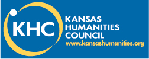
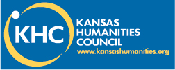

  ☰ menu
☰ menu
Digitization of Volga German Texts
Goals and funding
This project is a collaborative effort between the Suflower Chapter of the American Historical Society of Volga Germans from Russia and Fort Hays State University (English Department and Forsyth Library) made possibe due to the generous funding provided by the Kansas Humanities Council. Following the Council's goal to encourage language preservation and transference of old documents to modern media, the project aimed to preserve the language and culture of Volga German Kansans and popularize knowledge of this dialect among the general public.
Significance of project
Volga Germans had a founder effect on Ellis County. The documentation and description of their language is essential to the re-vitalization of the Volga German dialect and more broadly to maintaining the cultural heritage of the community.
Project description
We digitized a collection of Volga German texts and created, on its basis, an online dictionary and grammar commentary. The project took place in a number of stages:
We digitized a collection of Haberkorn family letters curated by the Forsyth Library at Fort Hays State University. These letters were written by members of the Haberkorn family who came to Ellis County in the late 19th century but returned to Russia in the early 20th century; the letters were addressed to relatives who had stayed in Kansas. The project staff converted the letters, handwritten in Volga German dialect, to typed German and accompanied them with English translations. We then made available online the scans of the letters, and their typed German and English versions.
We digitized a collection of Volga German folk songs, which were sourced from the informal book "German songs from Volga" as well as two CDs: "14 German Favorites: The Volga German Singers of Ellis County, Kansas" and "German Folk Songs from the Lawrence Weigel Library". Both the book and CDs were compiled by the late Lawrence Weigel. The project staff typed a selection of the songs in German and accompanied them with English translations. Some songs had already been translated by Mr. Weigel, while others were translated by the project staff. The audio files, as well as English and German full text, were made available online.
Because the Haberkorn letters use non-standard spellings, we created a glossary on the basis of the wordlist derived from the Haberkorn letters. The glossary contains translations of each wordform found in the letter corpus, comparisons with Standard German spellings, usage examples based on the letters, and references to specific files in which those examples are found.
We produced a grammatical commentary on the Volga German dialect. Examples in the commentary were drawn from the digitized songs and letters.
Sharing results with the community
The results of the project have been disseminated through public presenations at the Forsyth Library of Fort Hays State University, the Hays Public library, as well as two meetings of the Sun Flower Chapter of the American Historical Society of Volga Germans from Russia. Further presentations of the results of the project can be requested by public organizations in Kansas.